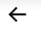
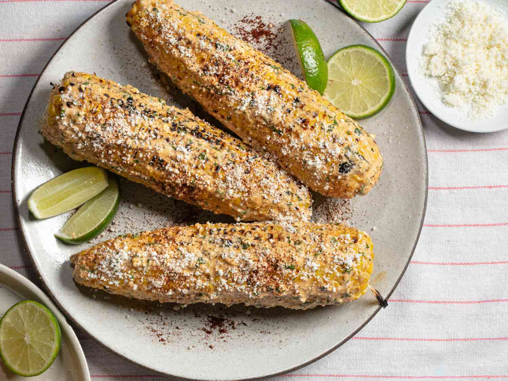
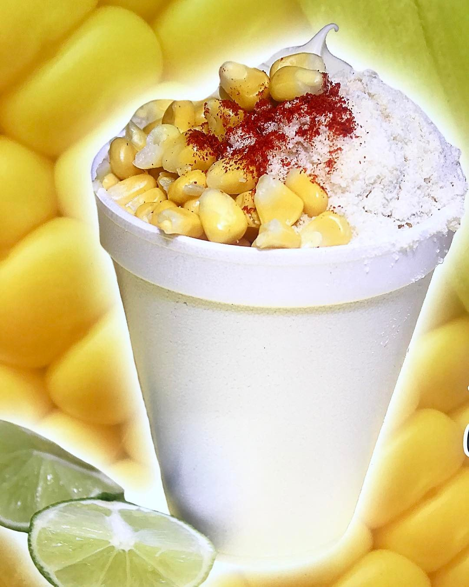

Corn in a cup
1,000 tweets


Corn in a Cup
@elote-SanAntonio
Outsourced CMO | Founder of Elote Works LLC | Father | Husband | U.S. Army Veteran
San Antonio, TX
Joined July 1776
109 Following
2,626 Followers
news-feed